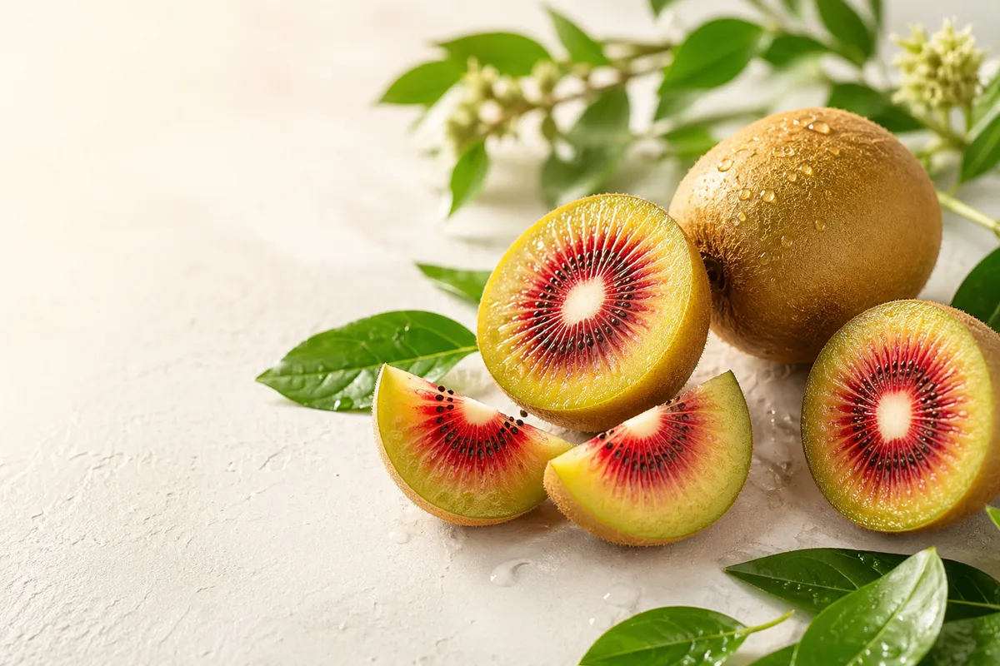

루비빛 중심부
반으로 갈랐을 때 드러나는 붉은 과육이 강한 첫인상을 남기며, 플레이팅만으로도 시선을 끄는 비주얼을 완성합니다.
Seasonal Signature Fruit
선명한 붉은 중심부와 부드러운 단맛, 그리고 산뜻한 향까지. Ruby Kiwi는 첫입의 놀라움과 마지막 한 조각의 여운을 모두 담은 프리미엄 과일입니다.

Why Ruby Kiwi
반으로 갈랐을 때 드러나는 붉은 과육이 강한 첫인상을 남기며, 플레이팅만으로도 시선을 끄는 비주얼을 완성합니다.
과하게 무겁지 않은 단맛과 산뜻한 향이 함께 어우러져, 과일을 좋아하지 않는 사람도 부담 없이 즐길 수 있습니다.
선별 후 빠르게 출고되는 흐름을 기준으로 기획해, 집에서도 산지의 산뜻한 컨디션을 최대한 가깝게 느낄 수 있습니다.
Brand Story
Ruby Kiwi는 흔한 과일 소개가 아니라, 색과 향, 질감의 차이를 감각적으로 전달하는 데 초점을 둔 제품 랜딩 콘셉트입니다. 붉은 중심부와 그린 골드 톤의 대비는 시각적인 매력을 만들고, 부드러운 단맛은 제품에 대한 기억을 더 오래 남깁니다.
선물용 과일, 카페 디저트 재료, 프리미엄 식재료 소개 페이지 등 다양한 방향으로 확장할 수 있도록 레이아웃을 구성했습니다.
진한 색감과 달리 무겁지 않은 맛이라 요거트, 샐러드, 디저트 토핑까지 다양하게 어울립니다.
Product Inquiry
루비 키위 상품 문의, 납품 문의, 협업 문의는 아래 이메일로 편하게 보내주세요. 확인 후 빠르게 답변드리겠습니다.